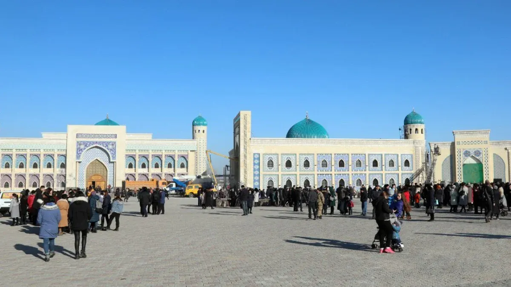

📌 Мекенжай
⏱️ Ұсынылатын уақыт
✨ Не көруге/істеуге болады

Тараздың тарихын, мәдениетін, тамағын, саудасын және демалыс орындарын бір жерден тап. Күнді таңда — маршрут, карта және әр нүктенің толық ақпараты дайын.
1, 2 немесе 3 күндік дайын маршрут. Аялдамалар ретімен көрсетілген — біреуін бассаң, картада көрсетіледі; «Толығырақ» — толық ақпарат.
Ескерту: Google Maps-та нақты көлік/жаяу жүру бағыты сол сәттегі жол жағдайына қарай есептеледі.
Карточканы бас — үлкен терезеде толық сипаттама, мекенжай, не істеуге болатыны және Google Maps батырмасы шығады. ❤️ арқылы ұнаған орындарды сақта.